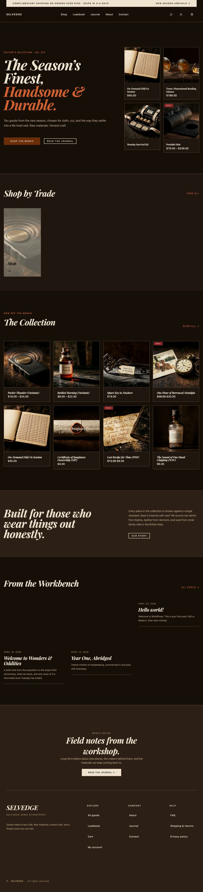
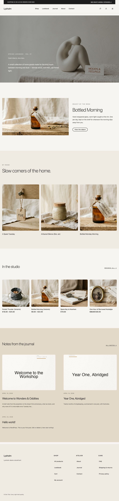

Section III · The contact sheets
snap gallery.
Every snap PNG for every theme, grouped by viewport. Generated from on-disk PNGs by bin/build-snap-gallery.py; rebuild after bin/snap.py shoot.





Section III · The contact sheets
Every snap PNG for every theme, grouped by viewport. Generated from on-disk PNGs by bin/build-snap-gallery.py; rebuild after bin/snap.py shoot.

